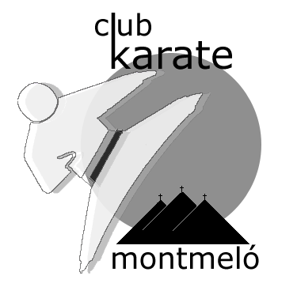

El Club
 El Club Karate Montmeló es va fundar al 1987, quan es va construir el pavelló municipal d'esports i es van encetar les diferents activitats esportives. Això va ser després d'una llarga trajectòria al poble, aproximadament des del 1975. Al pavelló es realitzen les classes a una sala destinada a aquesta activitat i a la pista poliesportiva quan es realitzen entrenaments multitudinaris o campionats.
Es va crear amb una Junta amb els propis socis, que ha anat canviant al llarg del temps. Ara mateix el nostre president és l'Òscar Ramos.
 Des d'un principi ha estat dirigit pel Gonzalo Rodríguez Peña, 7è DAN, Entrenador Nacional de Karate i titulat a nivell nacional en Defensa Personal. En Gonzalo és actualment també professor a l'Escola Catalana de l'Esport (Federació Catalana de Karate - Generalitat de Catalunya).
Com a mèrits esportius del Gonzalo podem destacar la seva titularitat a les seleccions catalanes i espanyoles i haver aconseguit importats títols, com els de Sots Campió Mundial, Campió d'Europa o proclamar-se campió a d'altres trofeus internacionals, com a l'Iran o Rússia. A banda, ha aconseguit pujar al pòdium a campionats d'Espanya durant més de quinze anys.
Des d'un principi ha estat dirigit pel Gonzalo Rodríguez Peña, 7è DAN, Entrenador Nacional de Karate i titulat a nivell nacional en Defensa Personal. En Gonzalo és actualment també professor a l'Escola Catalana de l'Esport (Federació Catalana de Karate - Generalitat de Catalunya).
Com a mèrits esportius del Gonzalo podem destacar la seva titularitat a les seleccions catalanes i espanyoles i haver aconseguit importats títols, com els de Sots Campió Mundial, Campió d'Europa o proclamar-se campió a d'altres trofeus internacionals, com a l'Iran o Rússia. A banda, ha aconseguit pujar al pòdium a campionats d'Espanya durant més de quinze anys.
Després de l'etapa com a competidor i fins l'actualitat, ha desenvolupat tasques de seleccionador a diferents categories dins la Selecció Catalana, aconseguint títols a nivells nacionar i un títol a nivell europeu (amb la Selecció Catalana al Campionat d'Europa de Regions).
 Tornant al club, els nostres alumnes han aconseguit moltíssims títols i medalles a campionats de Catalunya i Espanya. Molts han estat membres de la Selecció Catalana al llarg de la història del nostre club com el propi Gonzalo, el Ramón Arcos, la Denisse García, el David Ayala, el Miguel A. Santos, la Maricarmen Moreno, l'Arantxa Mariscal, la Mercedes Blázquez, el Pedro Collado, la Georgette Novella, el Manolo Calatayud, el Soufian Adraou, l'Alonso Rodríguez, l'Arnau Martínez, el Rodrigo Rodríguez, l'Andrés Sancho o Ibrahim El Ouarti.
Tornant al club, els nostres alumnes han aconseguit moltíssims títols i medalles a campionats de Catalunya i Espanya. Molts han estat membres de la Selecció Catalana al llarg de la història del nostre club com el propi Gonzalo, el Ramón Arcos, la Denisse García, el David Ayala, el Miguel A. Santos, la Maricarmen Moreno, l'Arantxa Mariscal, la Mercedes Blázquez, el Pedro Collado, la Georgette Novella, el Manolo Calatayud, el Soufian Adraou, l'Alonso Rodríguez, l'Arnau Martínez, el Rodrigo Rodríguez, l'Andrés Sancho o Ibrahim El Ouarti.
Els últims pòdiums aconseguits pels nostres esportistes han estat sobretot en campionats regionals i sobretot al de Catalunya per l'Ibrahim El Ouarti, l'Alonso Rodríguez, el Carles Martínez, l'Álex Cuadrado, el Joel Moreno, la Dafne Cepeda, la Marina Navarro, l'Amanda Bustamante, el Rodrigo Rodríguez, l'Andrés Sancho, el Soufian Adraou i Arnau Martínez
I els èxits més importants dels nostres competidors les darreres dues temporades han estat les medalles de bronze aconseguides per l'Arnau Martínez, el Rodrigo Rodríguez i l'Andrés Sancho al Campionat d'Espanya Sub21.